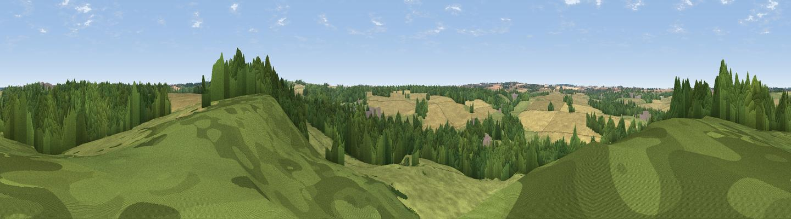
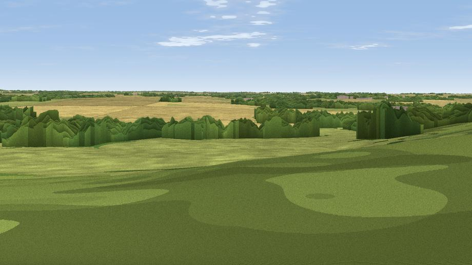

Viewpoint near Hunworth
#42774 in England · top 79% of its area beats it · near HunworthWhere it is
The exact computed spot (TG 06825 35875). Green wedges show where the rendered camera views below look. Click the marker for map links.
The view, rendered

A 360° render of this exact spot computed from the terrain model, tree cover and land cover — summer colours, afternoon light, calibrated against photographs of famous viewpoints. Real trees, hedges and buildings will differ in detail.
Through the camera

Rendered views along the best direction of this panorama.
The panorama
Grey silhouette: terrain skyline in each direction (720 bearings, Earth curvature and refraction included). Dashed green: skyline with trees (+15 m) and buildings (+8 m) as obstacles. Blue strip: how far the ground is visible on each bearing.
Where the view opens
Wedge length = distance to the farthest visible ground on that bearing (vegetation-aware). Rings at 10, 25 and 50 km.
What fills the view
38% grassland · 36% woodland · 26% cropland · 1% built-up
Angular shares of the visible panorama (visual magnitude), not map area. Landscape diversity 0.49 (0–1 Shannon).
Key numbers
More beautiful places nearby
The staircase of upgrades: each row has a higher view potential than everything closer. Driving times are estimates from straight-line distance, calibrated against real road routing — check an actual route before setting out.
| Place | Direction | Drive | Score |
|---|---|---|---|
| Viewpoint near Salthouse | N · 7 km | ~15 min | 65.4 |
| Viewpoint near Weybourne | NNE · 7 km | ~15 min | 68.3 |
| Viewpoint near Claxby | NW · 112 km | ~137 min | 71.5 |
| Broombriggs Hill | W · 156 km | ~179 min | 74.4 |
| Viewpoint near Woodhouse Eaves | W · 157 km | ~179 min | 77.7 |
| Viewpoint near Speeton | NNW · 167 km | ~188 min | 80.0 |
| Olivers Mount | NNW · 182 km | ~203 min | 80.3 |
| Viewpoint near Ravenscar | NNW · 197 km | ~215 min | 82.7 |
52.88055, 1.07225 · source: screening · position refined by local search. Computed location — check access rights before visiting.